Oʻahu, Lanikaiオアフ島 ラニカイのあたり
澄んだ水の底に、
サンゴと、色あざやかな魚たち。
桟橋の先から、ウキをなげる。白い砂と、ゆれる光の網。リーフのむこうで、白い波がくだける音。
潮が満ちると魚が寄り、波っ気があると、ウキも波に乗ってゆれる。ときどき、ウミガメが入り江をよこぎっていく。
急ぐことは、なにもありません。
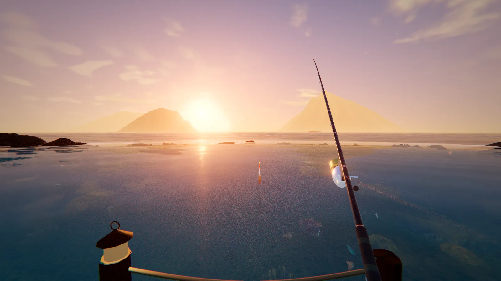
Hidamari-hama
ハワイの、小さな入り江で。
のんびり南の海釣り。
Oʻahu, Lanikaiオアフ島 ラニカイのあたり
桟橋の先から、ウキをなげる。白い砂と、ゆれる光の網。リーフのむこうで、白い波がくだける音。
潮が満ちると魚が寄り、波っ気があると、ウキも波に乗ってゆれる。ときどき、ウミガメが入り江をよこぎっていく。
急ぐことは、なにもありません。
One day入り江の一日
時間はゆっくり流れて、空も海の色も、魚の食いも変わっていきます。旅の地図から着いたときは、現地のいまの時刻から。
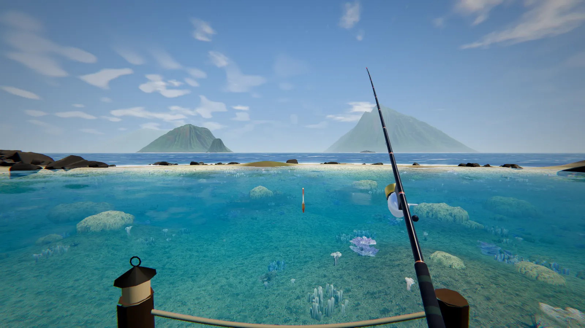
Tide & waves潮と波
Creatures海のいきもの
魚ごとに、好きなエサとタナ（深さ）、よく動く時間があります。ウキの動き（アタリ）にも、魚ごとの癖。
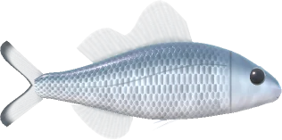
No.01
Kuhlia xenura
夕ぐれから夜、銀色の群れで浅瀬にあらわれる、浜のおなじみさん。ハワイでは「アホレホレ」。
体長 10〜30 cm ★
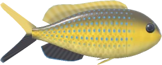
No.02
Chromis vanderbilti
ハワイのリーフでいちばん多い小魚のひとつ。わき腹の黄色に、青い小さな点の列。
体長 3.5〜7 cm ★
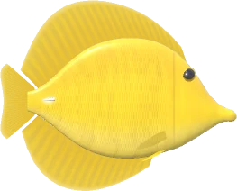
No.03
Zebrasoma flavescens
まっ黄色の、うすい円盤。ハワイでは「ラウイパラ」。
体長 11〜19 cm ★★
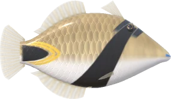
No.04
Rhinecanthus rectangulus
ハワイの州の魚「フムフムヌクヌクアプアア」。「ブタのような鼻のモンガラ」という意味。
体長 13〜24 cm ★★
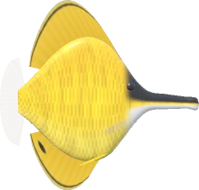
No.05
Forcipiger flavissimus
ピンセットのような長い口先で、サンゴのすきまの小さな虫をつまみ出す。まぶしい黄色に、黒い頭。
体長 10〜19 cm ★★
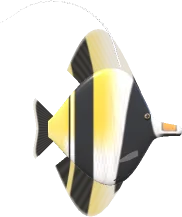
No.06
Zanclus cornutus
ハワイでは「キヒキヒ」。白・黒・黄のおびと、長くなびく背びれ。
体長 12〜22 cm ★★★
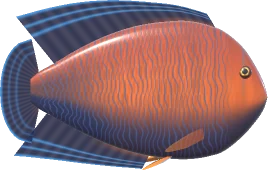
No.07
Centropyge potteri
ハワイとジョンストン環礁にしかいない、小さなヤッコ。前はオレンジ、うしろは青と黒のしま。
体長 6〜11 cm ★★★
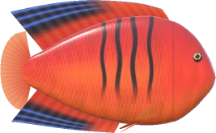
No.08
Centropyge loricula
炎（フレーム）のような赤の、小さなヤッコ。わき腹に細い黒の縦じま、ひれの後ろは黒に青いすじ。
体長 5〜9 cm ★★★★
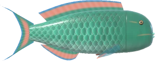
No.09
Scarus rubroviolaceus
ハワイでは「ウフ」。くちばしのような歯で、サンゴの上の藻を岩ごとかじりとり、白い砂をつくる。
体長 20〜45 cm ★★★
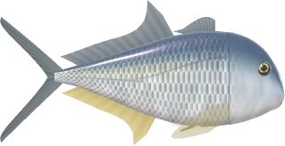
No.10
Caranx ignobilis (juv.)
ロウニンアジの若魚。大きくなると「ウルア」と呼ばれる。
体長 22〜55 cm ★★★
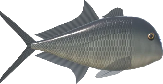
ぬし
夜のにわか雨のとき、リーフの外から入り江の深みへ入ってくる、という話。
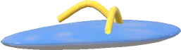
おまけ
Calceus littoralis
誰かの落とし物。ハワイでは「スリッパ」とよばれる、浜の定番の履物。
体長 24〜30 cm
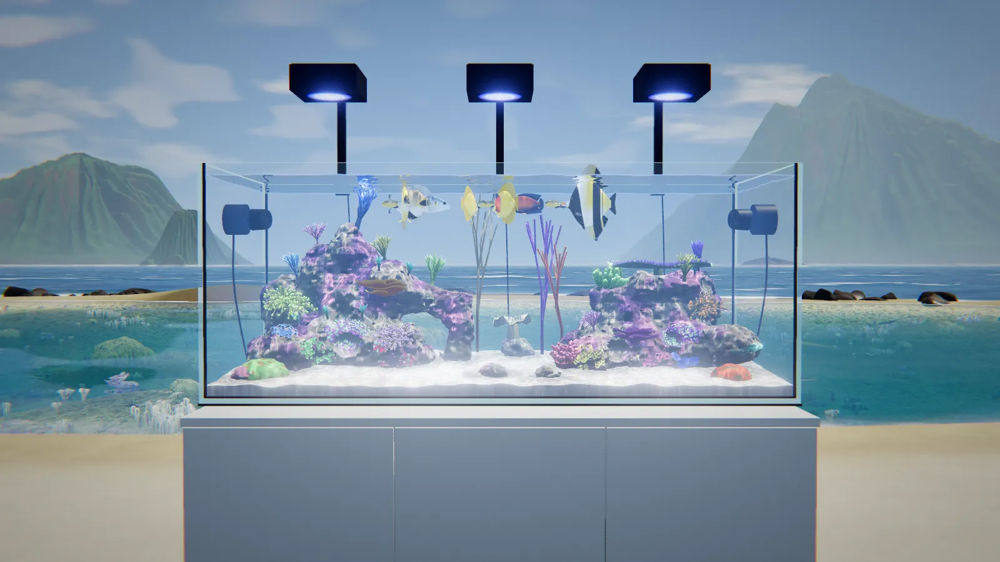
Aquarium浜の水槽
砂浜に、幅150cmのサンゴ礁の水槽。釣った魚を入れると、ずっと飼えます。魚は岩組みをよけてすっと泳ぎ、ヒメスズメダイは群がって向きをそろえます。視点を変えたり、夕日や夜の水槽にしたり、写真を撮ったり。
Travel map旅の地図
ゲームの右上の「地図」から、秋田の山あいの「ひだまり沼」へ出かけられます。紙飛行機が太平洋をこえ、着くと日付入りの旅のはんこ。図鑑や記録は、釣り場ごとに別々です。
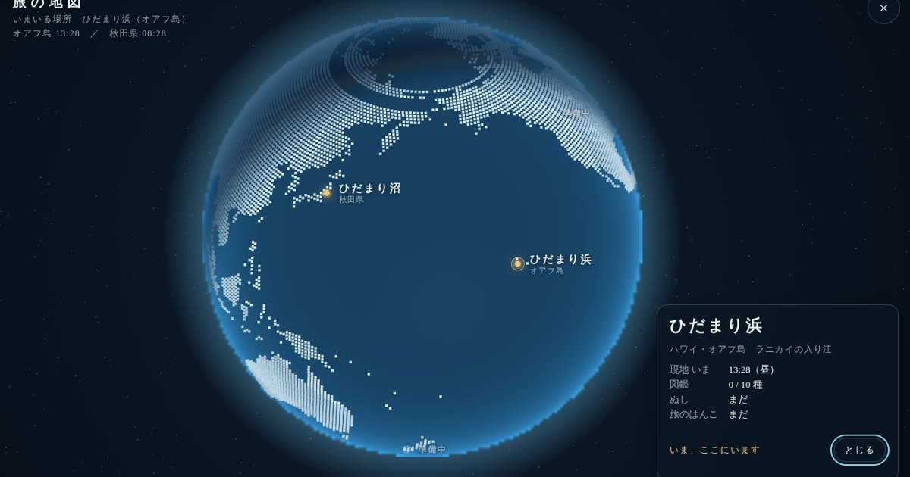
シリーズの入口で、スクロールしながら旅をする →